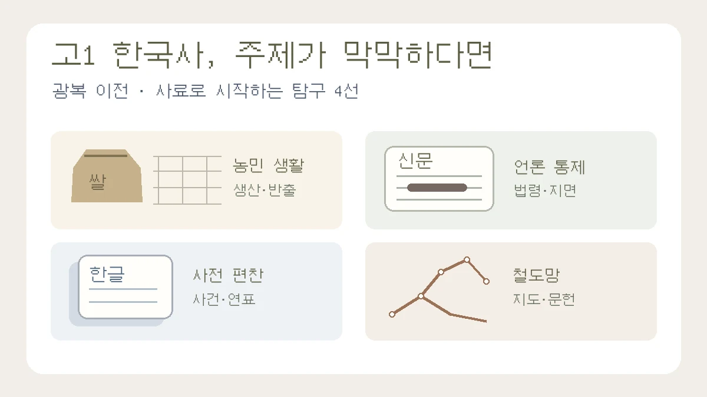

고1 한국사 세특 주제, 광복까지 배웠다면? 사료로 시작하는 탐구 4선
개항기부터 광복 이전까지, 진로보다 먼저 사건·질문·자료 범위를 정하기
목차
- 사건·질문·자료 범위 정하기
- 산미증식계획과 농민 생활
- 법령과 신문 통제
- 조선어학회와 사전 편찬
- 철도 지도와 문헌 비교
- 네 항목 보고서 구성
- 교사에게 보여 줄 과정 기록
- 주제 선택과 함께 읽을 글
핵심 요약
- 광복 이전 질문과 해방 이후 참고 경과 구분
- 원문·번역·해설·자신의 해석을 따로 기록
- 통계·지도만으로 생활 변화나 정책 목적을 단정하지 않기

“광복까지 배웠는데 한국사 탐구 주제를 못 고르겠어요.” 이런 상황에서 개항 이후의 모든 정책을 한꺼번에 조사할 필요는 없습니다. 교과서에서 궁금했던 사건 하나를 고르고, 서로 비교할 수 있는 자료 두 종류를 찾아보는 것이 출발점입니다. 처음에는 ‘일제강점기 경제’보다 ‘쌀 생산이 늘면 농민 생활도 나아졌을까?’처럼 답할 범위가 보이는 질문이 다루기 쉽습니다.
아래 네 주제는 개항기부터 1945년 광복 이전까지의 학습 내용과 연결하는 예시입니다. 희망 계열은 선택을 돕는 표지일 뿐, 전공을 정했거나 어려운 통계·GIS 도구를 사용해야 한다는 뜻은 아닙니다. 실제 단원명과 제출 범위는 사용하는 교과서와 교사의 안내를 확인하세요. 세특은 교사가 작성합니다. 학생이 준비할 것은 실제 탐구 결과와 질문·자료 선택·수정 과정을 보여 주는 기록입니다.
1. 주제보다 먼저 정할 것: 사건 하나, 질문 하나, 자료 범위
‘한국사와 나의 진로’를 크게 묶으면 역사적 사실보다 진로 소개가 길어지기 쉽습니다. 경제에 관심이 있어도 쌀 통계의 작성 배경과 농민의 생활 조건을 먼저 읽어야 하고, IT에 관심이 있어도 철도 지도를 그린 시대와 부설 경위를 먼저 확인해야 합니다. 진로 연결 자체가 잘못인 것은 아니지만, 그 연결이 역사 질문을 대신하지 않도록 합니다.
선택 기준은 자료 접근 가능성입니다. 오늘 확인할 수 있는 사료가 있는지, 원문을 읽기 어렵다면 번역과 해설이 제공되는지, 일주일 안에 살펴볼 범위를 정할 수 있는지부터 확인하세요. 처음 탐구라면 법령 일부와 기관 해설을 비교하거나, 사건의 연표와 기록물을 대조하는 방식으로 시작할 수 있습니다. 낯선 도구를 배우느라 자료의 의미를 놓치지 않아도 됩니다.
- 교과서에서 배운 사건과 단원·쪽을 적습니다.
- ‘무엇을 알아볼까’를 한 문장으로 좁힙니다.
- 비교할 시기·대상·자료를 정합니다. 자료 두 개를 찾는 것은 시작 범위의 예시이지 학교의 필수 기준이 아닙니다.
- 확인할 수 없는 내용은 결론이 아니라 남은 질문으로 표시합니다.
2. 경제 관심: 산미증식계획에서 생산 증가와 농민 생활 구분하기
탐구 질문: 1920년대 산미증식계획의 생산 확대 목표와 조선 농민의 생활 부담은 어떻게 달랐을까?
국사편찬위원회 우리역사넷의 ‘일제의 산미증식계획의 목적과 실행’은 정책 관련 사료의 번역과 해설을 제공합니다. 정책이 내세운 목표를 읽고, 산미증식계획 해설에서 일본으로의 쌀 반출과 농민의 부담을 함께 살펴보세요. 해설은 쌀 증산과 반출 증가, 한국인의 소비 감소 및 농민 생활의 문제를 설명합니다. 생산량 증가가 모든 농민의 생활 개선을 뜻하지 않는다는 점이 비교의 출발점입니다.
기본 활동은 ‘정책 목표 / 토지·수리 사업과 비용 / 이익이나 부담을 받은 집단 / 확인한 근거’를 정리하는 것입니다. 심화하고 싶다면 같은 통계표에서 동일한 단위와 기간의 생산량·일본 이출량을 골라 비교합니다. 반출 증가와 증산분의 크기를 비교하는 설명을 ‘총반출량이 총생산량보다 많았다’는 뜻으로 바꾸지 마세요. 당시 자료의 ‘이출’과 ‘수출’도 문서의 분류를 확인하고 그대로 표시합니다.
통계에서 인구 범위, 수입·재고, 잡곡 소비 등을 확인하지 않고 ‘생산량에서 반출량을 빼면 1인당 실제 소비량’이라고 계산해서는 안 됩니다. 평균 소비량만으로 특정 소작농 가구의 식생활을 설명할 수도 없습니다. 동양척식주식회사·금융기관·소작료·조세·수리조합비를 모두 다루려 하면 범위가 커지므로, 농민 부담 한 항목을 추가 질문으로 남기는 편이 좋습니다. 기관과 시기마다 다른 이자율을 출처 없이 하나의 숫자로 제시하지 않습니다.
계획 단계의 문장 예시
산미증식계획을 배우며 생산 확대와 농민 생활 개선이 같은 뜻인지 궁금해졌다. 정책 문서의 목표와 농민 부담을 다룬 해설을 비교하고, 동일한 기간의 통계를 구할 수 있다면 생산·반출 변화를 함께 확인할 계획이다.
3. 법·행정·언론 관심: 법령과 신문 통제를 구분해 읽기
탐구 질문: 식민지 통치의 법령은 어떤 행위를 처벌 대상으로 삼았으며, 신문 지면 통제는 어떤 모습으로 드러났을까?
처음에는 두 활동 중 하나만 선택해도 됩니다. 법령 중심이라면 우리역사넷의 ‘치안 유지법’에서 1925년 법과 뒤의 개정 내용을 구분해 읽습니다. 1925년 법이 국체 변혁이나 사유재산제도 부인을 목적으로 한 결사 등을 처벌 대상으로 삼은 점을 확인하고, 해설에서 식민지 조선의 독립운동 탄압과 연결된 적용을 살펴보세요. 원문 조항, 번역, 기관 해설과 자신의 해석을 별도 칸에 정리합니다.
신문 사례를 택한다면 한국학중앙연구원의 ‘일장기 말소사건’을 출발 자료로 삼을 수 있습니다. 1936년 손기정의 사진에서 일장기를 지운 사건과 동아일보의 정간을 설명하는 해설입니다. 기관 설명을 읽은 뒤 당시 신문 지면을 찾고, 사진·기사 날짜와 지면 위치를 함께 기록합니다. 사진을 지운 행위, 정간 처분, 기사 문장의 논증을 같은 분석 대상으로 뭉뚱그리지 마세요.
‘조선언론령’처럼 정확한 법령을 확인하지 못한 이름을 사용하지 않습니다. 신문 규제를 다루려면 ‘신문지법(1907년)’ 사료와 해설을 참고하고, 선택한 사건에 실제로 어떤 규정이 적용됐는지는 따로 확인해야 합니다. 모든 정간 사례를 치안유지법 하나의 직접 결과로 설명할 수는 없습니다.
자료가 없어서 읽지 못한 기사의 내용을 추측해 복원하지 마세요. 삭제·압수·정간은 서로 다른 조치이며, 당시 검열된 내용과 오늘날 디지털 자료의 누락도 다른 문제입니다. ‘프레이밍을 실증했다’고 쓰려면 어떤 표현을 어떤 기준으로 분류했는지 보여 줘야 합니다. 기사 한 편의 비교라면 분석 범위도 그 지면에 한정합니다.
4. 인문·어문 관심: 조선어학회 사건과 사전 편찬 기록
탐구 질문: 조선어학회의 언어 정리·사전 편찬 활동은 어떤 과정으로 진행됐고, 1942년 사건은 그 활동에 어떤 영향을 주었을까?
우리역사넷의 조선어학회 사건 설명은 1942년 탄압과 사전 원고 등의 압수를 다룹니다. 국가기록원의 ‘조선말 큰사전 편찬 원고’ 안내에서는 남아 있는 편찬 기록을 확인할 수 있습니다. 사전 편찬이 단순히 단어를 모으는 활동인지, 표기와 어휘를 정리하는 작업이었는지를 기록에 근거해 살펴보세요.
활동·사건·결과를 연표로 구분하는 것이 기본 활동입니다. 1942년의 사건과 사전의 출간 시기를 섞지 않습니다. 국가기록원의 큰사전 완간 기록 안내에 따르면 제1권은 1947년, 여섯 권의 완간은 1957년입니다. 과제가 광복 이전까지라면 해방 이후 출간은 활동의 후속 경과를 설명하는 짧은 참고로만 두고, 본론은 광복 이전 활동에 집중합니다.
심화는 공개된 원고 이미지와 해설을 대조해 한 페이지의 표기·어휘 정리 특징을 기록하는 방식으로 할 수 있습니다. 원고를 읽기 어렵다면 판독할 수 없는 부분을 표시하고 번역·해설에 의존한 범위를 밝힙니다. 시기와 교육기관에 따라 달랐던 언어 정책을 일제강점기 전체의 ‘모든 조선어 사용이 항상 금지됐다’로 단순화하지 마세요. 한 사건만으로 언어가 모든 사고를 결정한다는 언어학적 인과관계를 입증할 수도 없습니다.
5. 공학·데이터 관심: 철도 지도로 질문 만들고 문헌으로 검토하기
탐구 질문: 경부선·경의선의 노선과 개통 시기를 살펴보면 항만·도시·군사적 이동의 연결에서 무엇을 확인할 수 있을까?
서울역사아카이브의 철도 자료 안내는 철도 부설과 제국의 군사·경제적 확장을 설명하며 경부선 1905년, 경의선 1906년 개통을 제시합니다. 두 노선은 1910년 병합 이전에 개통됐으므로 ‘일제강점기 이후 처음 생긴 노선’이라고 적지 않습니다. 개항기·대한제국기와 병합 이후의 변화를 구분해 조사하세요.
기본 활동에서는 두 노선과 주요 연결 지점을 같은 지도 위에 표시하고, ‘역사적 지명 / 당시 위치 / 확인한 자료 / 현재 지도에서의 대응 위치’를 정리합니다. 종이지도나 간단한 표로 충분하며 GIS는 선택 사항입니다. 현재 위치로 과거 역을 표시했다면 이전·개명 가능성을 확인하고 현대 좌표를 과거의 정확한 위치처럼 쓰지 않습니다.
노선이 항만에 연결됐다는 지도만으로 식민지 수탈의 목적이나 규모를 통계적으로 입증할 수는 없습니다. 노선 지도는 연결 구조를 보여 주는 자료입니다. 부설 목적·운영권·화물 이동은 정책 문서와 교통 통계, 연구 해설로 추가 검토해야 합니다. 군사·경제적 지배의 맥락을 보되 여객 이동이나 시장 변화 등 확인되는 기능도 기록하고, 모든 노선에 하나의 목적만 있었다고 단정하지 않습니다.
수정 전
철도가 항구로 이어져 있으므로 일본의 수탈 목적을 GIS로 완전히 증명했다.수정 후
선택한 두 노선의 항만·주요 도시 연결을 지도에서 확인했다. 부설 목적은 기관 해설과 함께 검토했지만, 지도만으로 화물의 종류와 반출량을 알 수 없어 경제적 효과의 크기는 판단하지 않았다.
6. 보고서는 동기·활동·한계·후속 질문으로 정리하기
아래 구성은 작성 편의를 위한 예시이며 대학의 공식 평가 공식이나 등급 보장 조건이 아닙니다. 교사가 요구한 목차·분량을 우선합니다.
- 동기: 실제 교과서 단원·쪽과 배운 내용을 적고, 의문을 질문 하나로 만듭니다.
- 활동: 자료를 고른 이유, 확인한 사실, 서로 다른 설명과 자신의 해석을 구분합니다. 원문과 번역·해설의 출처를 각각 남깁니다.
- 한계: 읽지 못한 원문, 비교 기간·단위의 차이, 자료를 작성한 기관의 관점, 결론으로 말할 수 없는 범위를 적습니다.
- 후속 질문: 이번 조사에서 남은 질문 하나를 기록합니다. 학교가 개설한 과목과 실제 선택에 따라 나중에 수정할 수 있는 계획입니다.
식민지 기관이 만든 통계는 작성 목적과 집계 방법을 검토해야 하지만, 작성 주체만으로 모든 수치가 조작됐다고 단정하지 않습니다. 오류·편향을 주장하려면 같은 시기의 다른 자료와 대조한 근거가 필요합니다. 역사 탐구에서 자료의 한계는 반드시 실험의 ‘오차’와 같은 뜻도 아닙니다.
7. 선생님께 보여 줄 것은 ‘완성 세특 문장’보다 과정 기록
보고서 옆에 ‘처음 질문 / 선택한 자료 / 해석을 바꾼 근거 / 아직 확인하지 못한 점’을 짧게 정리하세요. 수행한 조사와 예정한 활동, 자신의 분석과 기관의 해설을 구분하면 교사가 학생의 활동을 파악하는 데 도움이 됩니다. 제출했다고 특정 표현이 세특에 반드시 기록되거나 높은 평가를 받는 것은 아닙니다.
교육용 과정 메모 예시
처음에는 쌀 생산 증가를 농민 생활 개선과 같은 뜻으로 보았다. 정책 목표와 농민 부담에 대한 해설을 대조한 뒤 두 문제를 구분할 필요가 있다고 판단했다. 가구별 생활 변화는 이번에 확인하지 못해 결론의 범위에서 제외했다.
위 메모는 실제 학생이 수행한 결과가 아니라 작성 연습 예시입니다. 자신의 활동에 해당하지 않는 문장을 복사해서 제출하지 마세요. 후속 탐구에서도 특정 선택과목이나 ‘3년 진로 서사’를 억지로 정할 필요는 없습니다. 예를 들어 다른 시기의 언어 정책과 비교하고 싶다면, 비교할 기관·시기·정책 문서를 정하는 데서 시작하면 됩니다.
8. 지금 한 가지를 고르는 기준과 함께 읽을 글
원문 독해가 부담스럽다면 번역이 제공되는 치안유지법 일부와 해설을 비교하는 활동을, 연표 정리가 익숙하다면 조선어학회 활동을 먼저 검토하세요. 통계표를 읽을 준비가 되었다면 산미증식계획, 지도와 위치 확인에 관심이 있다면 철도망 질문이 선택지가 됩니다. 이 순서는 주제의 우열이 아니라 자료와 도구에 대한 준비 정도를 기준으로 한 제안입니다.
조선시대 장부·재정·화폐에서 경영·회계 질문을 찾고 싶다면 기존 한국사 경영·회계 탐구 가이드를 참고하세요. 이번 글은 광복 이전 근현대사에서 자료를 고르는 안내로 역할이 다릅니다. 보고서 전체 구성은 대표 작성 가이드, 조사한 자료를 자신의 분석으로 바꾸는 방법은 자료 요약에서 분석으로 바꾸는 칼럼과 이어서 볼 수 있습니다.
관련 글
고1 한국사 탐구보고서: 경영·회계 연계 주제 4선과 작성 로드맵NEW
개성상인의 장부, 대동법, 화폐 유통, 개항기 기업을 한국사 질문으로 탐구하고 사료 읽기·현대 개념 비교·후속 탐구를 연결하는 가이드입니다.
탐구보고서 처음 쓰는 법: 질문·자료·분석·결론을 연결하는 실전 예시NEW
가상 공지 네 개를 비교하며 관찰과 해석, 결론의 한계를 구분하고 보고서 한 편으로 묶습니다.
고1 탐구보고서 시작법: 공통과목에서 진로 질문으로 넘어가기NEW
고1은 거창한 전공 주제보다 수업 개념에서 출발해 작은 진로 질문을 만드는 것이 좋습니다.
이 글은 일반 교육 정보이며 특정 대학 합격·학생부 평가·면접 결과를 보장하지 않습니다. 학교와 대학의 공식 안내를 함께 확인해 주세요.